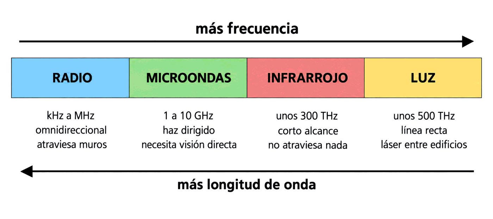
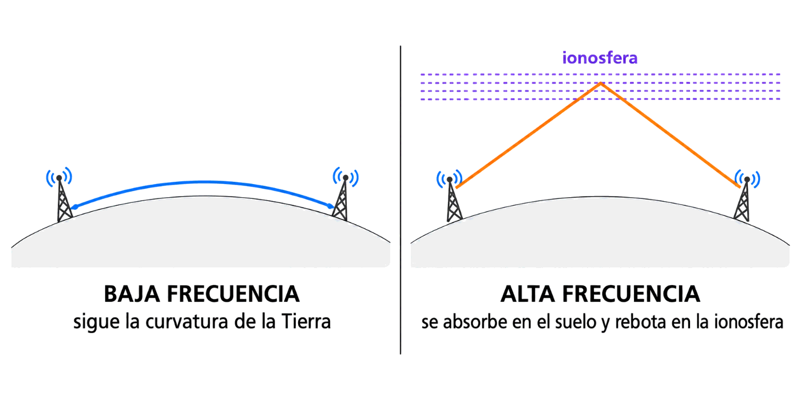

Contenido del día
1. Qué significa «no guiado»
Recuperemos la definición exacta del libro, porque cada palabra cuenta:
Proporcionan un soporte para que las ondas se transmitan, pero no las dirigen.
El aire no hace nada activo: no conduce, no encauza, no protege. Deja pasar. Y de esa diferencia salen todas las consecuencias de la semana:
| Medio guiado | Medio no guiado | |
|---|---|---|
| Quién limita la velocidad | El propio medio: categoría, longitud, apantallamiento | El espectro de frecuencia usado, más las condiciones atmosféricas |
| Se puede mejorar… | Cambiando el cable | Cambiando de banda o de técnica de modulación, no «de aire» |
| Quién más lo usa | Nadie: el cable es tuyo | Todos: el espectro es compartido |
| Quién puede escuchar | Quien pinche el cable | Cualquiera dentro del alcance |
| Coste de instalación | Obra, canalizaciones, conectores | Casi nulo: dos equipos y nada por el medio |
Las dos últimas filas explican por qué lo inalámbrico se ha comido el mundo y por qué, a la vez, es un dolor de cabeza: es baratísimo de instalar y no controlas el medio.
2. Cómo se propagan las ondas
Las comunicaciones inalámbricas consisten en el envío y recepción de electrones —o fotones— que circulan por el espacio libre. El libro usa una comparación muy visual: esas partículas viajan en forma de ondas electromagnéticas que se propagan como las ondas del agua en un estanque.
- Las ondas salen en todas direcciones desde el emisor, no hacia un sitio concreto.
- Se van debilitando a medida que se alejan, porque la misma energía se reparte en un círculo cada vez mayor. Es la atenuación de la Semana 5, ahora con una causa geométrica.
- Si dos emisores trabajan a la vez, sus ondas se cruzan y se mezclan. Eso es la interferencia.
Y aparece la primera regla de la semana: dependiendo de la frecuencia de la señal, existen diferentes tipos de enlaces inalámbricos, con propiedades distintas. Los cuatro tipos que estudiaremos —radio, microondas, infrarrojos y luz— no son tecnologías rivales: son zonas distintas del mismo espectro.
3. Frecuencia y longitud de onda
Toda onda electromagnética viaja en el vacío a la velocidad de la luz, unos 300 000 km/s. Su longitud de onda es la distancia que recorre en un ciclo completo:
Donde λ es la longitud de onda en metros, c son 3 · 10⁸ m/s y f la frecuencia en hercios.
Con la frecuencia en GHz, el atajo práctico es: λ (cm) = 30 / f (GHz).
| Señal | Frecuencia | Longitud de onda | Comportamiento |
|---|---|---|---|
| Onda media (radio AM) | 1 MHz | 300 m | Rodea obstáculos y edificios sin enterarse |
| Radio FM | 100 MHz | 3 m | Atraviesa paredes con facilidad |
| Wi-Fi 2,4 GHz | 2,4 GHz | 12,5 cm | Atraviesa una pared, sufre con dos |
| Wi-Fi 5 GHz | 5 GHz | 6 cm | Más velocidad, menos alcance y peor con obstáculos |
| Wi-Fi 60 GHz | 60 GHz | 5 mm | Prácticamente no sale de la habitación |
Más frecuencia → más ancho de banda disponible → más velocidad… y menos alcance, porque las ondas cortas rebotan y se absorben con cualquier obstáculo.
Esa tensión recorre toda la semana, y es la misma que viste en el cobre entre categoría y distancia: lo que se gana por un lado se paga por otro.
4. El espectro, por bandas
Los cuatro medios no guiados del libro ocupan zonas consecutivas del espectro. Vistos en orden de frecuencia creciente:

◀── más longitud de onda más frecuencia ──▶
RADIO MICROONDAS INFRARROJO LUZ
kHz - MHz 1 - 10 GHz ~300 GHz ~500 THz
omnidireccional haz dirigido corto alcance línea recta
atraviesa muros necesita vista no atraviesa no atraviesaFíjate en que la direccionalidad aumenta con la frecuencia: la radio se va por todas partes, el láser va a un punto. Y la capacidad de atravesar obstáculos hace lo contrario.
5. Las cuatro propiedades de lo inalámbrico
| Propiedad | Qué significa | Consecuencia práctica |
|---|---|---|
| Área de cobertura | Las señales no atraviesan bien los obstáculos | La cobertura real la dibujan las paredes, no un círculo perfecto |
| Tasa adaptativa | La velocidad baja cuando la señal se debilita | «Tengo cobertura» no significa «tengo velocidad» |
| Interferencia | Les afectan otras emisiones en la misma banda | El vecino, el microondas de la cocina o un mando pueden tirarte la red |
| Seguridad | Cualquiera accede a la señal: no hace falta tocar nada | Hay que cifrar; en un cable puedes no hacerlo, aquí no |
El libro lo explica así: como la capacidad de transmisión de una red inalámbrica depende directamente de la potencia de la señal, esta puede adaptar su velocidad a la cobertura disponible. Cuando la señal se debilita con la distancia, los protocolos establecen una tasa adaptativa, y la velocidad disponible puede reducirse muchísimo respecto a la nominal.
Con Shannon en la mano ya sabes por qué: menos potencia es peor relación señal/ruido, y peor S/N es menos capacidad. La tasa adaptativa no es más que rendirse a Shannon de forma ordenada.
6. Las ondas de radio
Primera de las cuatro familias. El libro les da cuatro rasgos:
- Son fáciles de generar.
- Pueden recorrer largas distancias.
- Penetran en los edificios sin problemas.
- Viajan en todas direcciones desde la fuente emisora, es decir, son omnidireccionales.
La tercera y la cuarta son las que las hacen cómodas: no hay que apuntar a ningún sitio y la señal entra en las casas. Son también las que las hacen fáciles de interferir y de escuchar.
Baja frecuencia y alta frecuencia se comportan distinto
| Radio de baja frecuencia | Radio de alta frecuencia | |
|---|---|---|
| Frente a la Tierra | Siguen su curvatura y no son absorbidas | Son absorbidas por la superficie |
| Cómo llegan lejos | Bordeando el planeta | Haciéndolas rebotar en la ionosfera, o con repetidores intermedios |
| Ejemplo | Onda larga y onda media | Onda corta, radioaficionados |

BAJA FRECUENCIA ALTA FRECUENCIA
─ ─ ─ ionosfera ─ ─ ─
~~~~~~~~~~~~~~ ╱╲
╱ ╲ ╱ ╲
▲ sigue la curva ▲ ▲ ▲ rebota y vuelve a bajar
╲______________╱ ╲__╱Es la propagación por ionosfera: de noche esa capa cambia y refleja mejor, así que una emisora de onda media que de día apenas cubre su provincia puede oírse a cientos de kilómetros. La señal no ha ganado potencia; ha encontrado un espejo en el cielo.
7. Por qué el espectro está regulado
Aquí aparece algo que no existía con el cobre: un tercero que manda.
Cuando las redes de radio cubren largas distancias, es necesario un control estricto por parte de los gobiernos para que las distintas transmisiones no se interfieran entre sí. En señales que cubren distancias cortas no hacen falta permisos especiales, y varias redes cercanas pueden usar frecuencias diferentes.
Esa es exactamente la frontera entre una emisora de radio comercial, que necesita licencia y paga por ella, y tu router Wi-Fi, que no la necesita.
💡 Ampliación: las bandas libres, que el libro no nombra
No sale de la bibliografía de la asignatura. El libro dice que en distancias cortas «no es necesario solicitar permisos especiales», pero no explica por qué. El motivo tiene nombre: las bandas ISM (industriales, científicas y médicas), reservadas internacionalmente para uso sin licencia. Las más conocidas son la de 2,4 GHz y parte de la de 5 GHz, que es donde vive el Wi-Fi.
Usarlas sin licencia tiene una contrapartida: nadie te protege de las interferencias. En esa misma banda de 2,4 GHz trabajan los hornos microondas, el Bluetooth, muchos mandos y los teclados inalámbricos. Si te interfieren, no hay a quién reclamar; en una banda con licencia, sí.
En España quien gestiona el espectro es la Secretaría de Estado de Telecomunicaciones, dentro del marco que fija la UIT a nivel internacional. Se retoma en el Mes 12.
8. Resumen y errores frecuentes
- Un medio no guiado da soporte a las ondas pero no las dirige. El espectro es compartido y cualquiera puede escuchar.
- Las ondas se propagan como en un estanque: en todas direcciones, debilitándose y mezclándose entre sí.
- λ = c / f. A 2,4 GHz son 12,5 cm; a 5 GHz, 6 cm.
- Más frecuencia significa más velocidad posible y menos alcance.
- Cuatro propiedades: cobertura limitada por los obstáculos, tasa adaptativa, interferencias y seguridad.
- Las ondas de radio son fáciles de generar, llegan lejos, atraviesan edificios y son omnidireccionales.
- Las de baja frecuencia siguen la curvatura terrestre; las de alta se absorben y se hacen rebotar en la ionosfera.
- El espectro está regulado: licencia para largas distancias, bandas libres para las cortas.
| Se dice… | …pero en realidad |
|---|---|
| «El aire es un medio como el cobre» | El cobre conduce; el aire solo deja pasar. Y es de todos |
| «Más frecuencia siempre es mejor» | Más velocidad posible, pero menos alcance y peor frente a obstáculos |
| «Si tengo cobertura, tengo velocidad» | La tasa adaptativa baja la velocidad cuando la señal se debilita |
| «La radio de alta frecuencia llega más lejos» | Se absorbe en la superficie; para ir lejos necesita rebotar en la ionosfera o repetidores |
| «Wi-Fi es una frecuencia» | Wi-Fi es una familia de estándares que usa microondas en bandas libres. Se ve el miércoles |
| «Como no hay cable, no hay que cifrar» | Justo al revés: cualquiera dentro del alcance recibe la señal |
| «Las bandas libres son gratis y sin problemas» | Son gratis y sin protección: si te interfieren, no hay a quién reclamar |
9. Repaso con flashcards
Piensa la respuesta antes de girar la tarjeta.
Quiz del día
14 preguntas · 21 minutos · Contesta sin volver a la teoría
El cronómetro no corre mientras lees: arranca al llegar aquí, al pulsar «Empezar quiz» o al marcar tu primera respuesta.
Resultados
Respuestas correctas: 0 / 0
Respuestas incorrectas: 0
Vas a inventariar los emisores que tienes en casa, anotar su banda y calcular su longitud de onda, para explicar por qué unos llegan a toda la casa y otros no salen de la habitación.
→ Ir al laboratorio del Día 1 (66 min)
Microondas y satélite: el haz estrecho, la antena parabólica, la alineación milimétrica y el retardo que deja inservibles algunas aplicaciones.
Tarea de calentamiento (5 min): ¿cuánto tarda la luz en recorrer 36 000 km? Multiplícalo por dos y piensa si notarías esa espera en una videollamada.